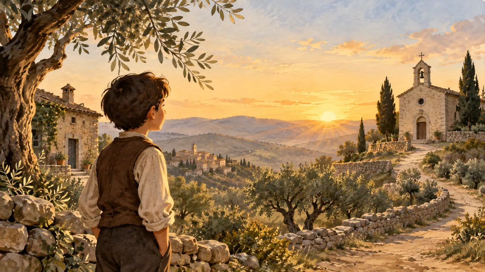

Read-Aloud Storybook
The Story of Saint Charbel
The boy from the Lebanese mountains who became the hermit of Annaya - a 27-page storybook about prayer, silence, and a life hidden with God.
Open Saint Charbel's StorybookEvery saint here has their own storybook - their own story, their own pictures, their own voice reading aloud. Choose a story below, gather the children, and press play. Each book opens with the first page and reads to the end, page by page.
Read-aloud storybooks for ages 5-12, with gentle narration on every page.
The boy from the Lebanese mountains who became the hermit of Annaya - a 27-page storybook about prayer, silence, and a life hidden with God.
Open Saint Charbel's Storybook
The boy from Pietrelcina who became a friar and spent his life helping people come back to God - a story of prayer, kindness, and courage.
Open Padre Pio's StorybookLolek from Wadowice, who lost so much and kept on loving - the boy who became a pope and told the whole world: do not be afraid.
Open John Paul II's StorybookEach storybook is written for children and checked against documented sources - the Vatican and the saints' own shrines and biographies. The pictures are original imaginative illustrations, not historical footage, and every page says where its story comes from. More saint storybooks are on the way; each new one joins this shelf.
Grown-ups can read the fuller lives on the Saints & Blesseds page, or the full history of Saint Charbel.